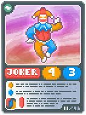
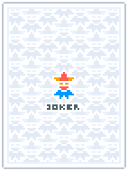
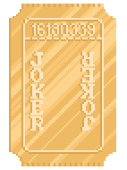
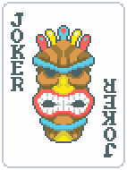
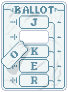
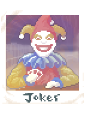
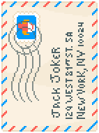

My Favorite Jokers
Jokers are commonly considred to be the most useless cards in a deck of playing cards. In Balatro, they are essential to win. Here are my personal favorites.
- Blueprint/Brainstorm
- These jokers copy a another joker's effect. Blueprint copies the joker to the right of it, and brainstorm copies the leftmost joker in your roster.


- Trading Card
- You can sell a single card per round for $3, having two benefits: you get money, and you can thin your deck.

- Riff-Raff
- Creates two random common jokers. This is super nice for either getting money, or easy scoring.

- Golden Ticket
- For every gold card triggered, you get $4. This is probably the best money-making tech in the game.

- The Idol
- Multiply your score by 2x for every card (if the rank and suit match) triggered. If you have a deck of purely King of Hearts, for example, this is very powerful.

- Mime
- Refer to Baron. This just triggers a card in hand (like gold or steel) again.

- Hanging Chad + Photograph
- VERY score early-game scoring. The first card is retriggered 2 times, and the first played face card is scored 2x. That is 2^3, which can be very strong.


- Baron
- This joker is commonly used to score the highest scores in the game. Every king held in hand multiplies the score by 1.5x. You can have 1.5^40, which is massive, and if you retrigger the baron with mime, steel, and blueprint/brainstorm, that can be in excess of 1.5^1500.

- Mail-In Rebate
- This joker gives you $5 for every card rank discarded. This is very strong for economy, just shy of what Golden Ticket can do. It is very strong, and great for early-game economy as well!
